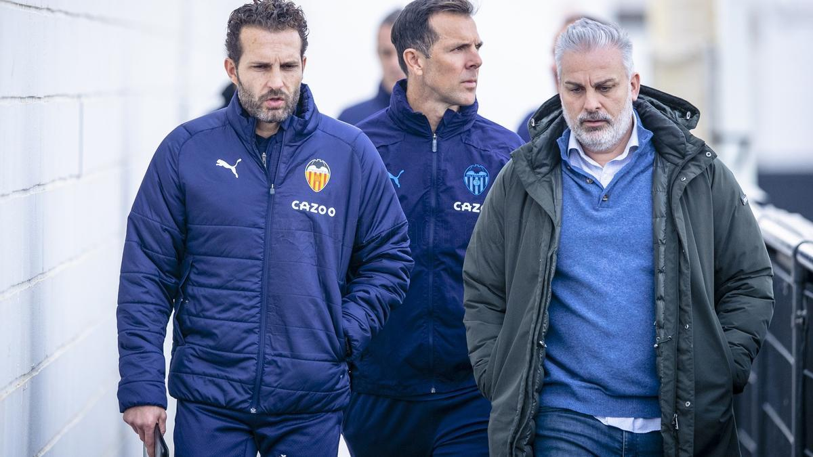
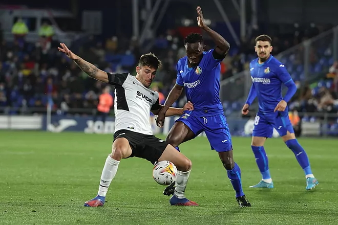
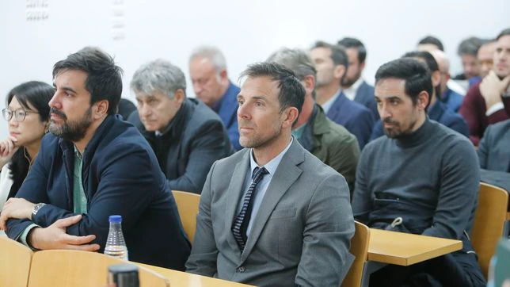

Últimas noticias del Valencia

Baraja toma el mando en Paterna
El Pipo, acompañado de Carlos Marchena, ha dirigido su primera sesión y se ha dirigido a la plantilla por vez primera
Leer más

Hugo Duro pide paso en 'su momento'
El delantero quiere aprovechar la ausencia de Cavani para ayudar al equipo ante su Getafe al que ya marcó en Mestalla
Leer más

Carlos Marchena, de formador de niños a ‘salvador’ del Valencia
El segundo entrenador de Baraja trabajaba con un programa para niños en la Junta de Andalucía y era comentarista en Televisión Española. Antes, fue mano derecha de Caparrós en el Sevilla.
Leer más